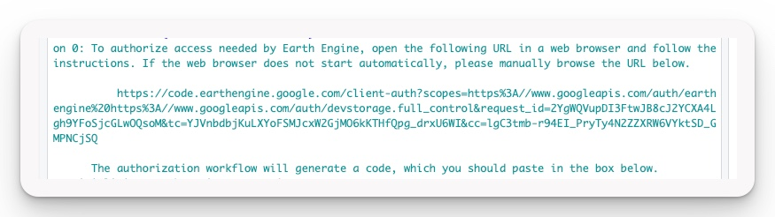
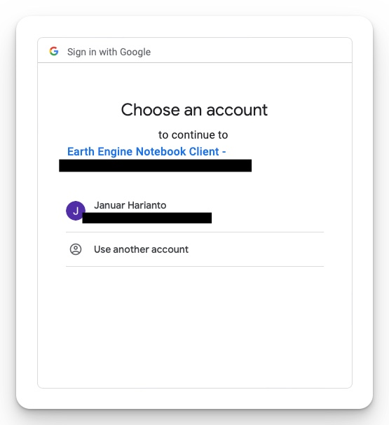
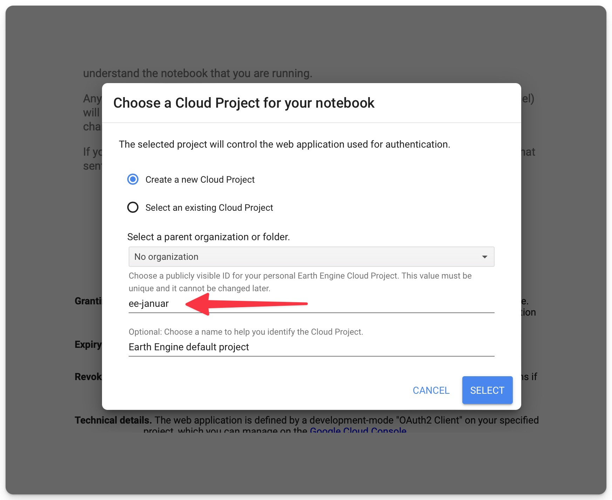
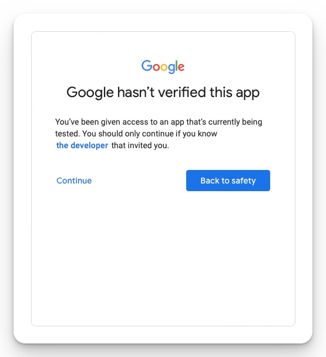
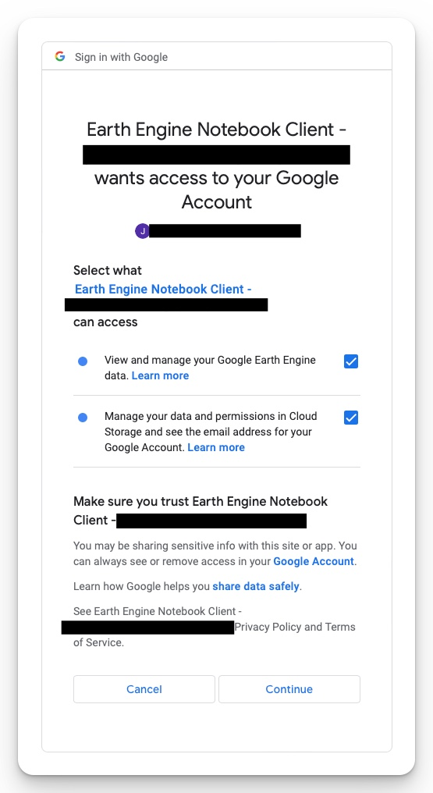
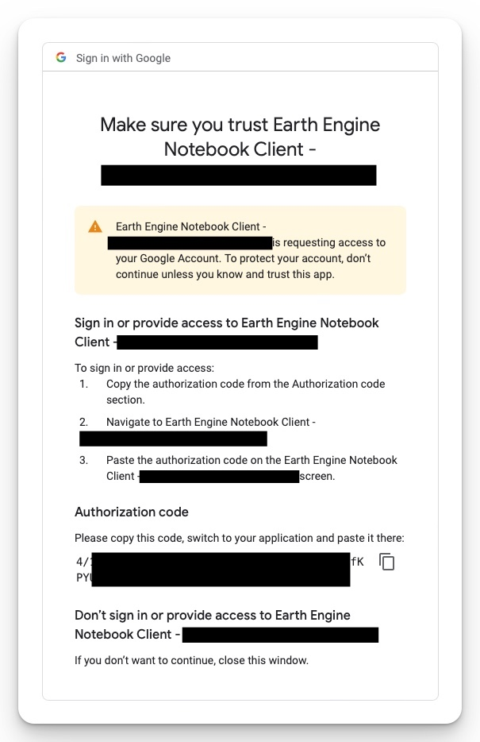
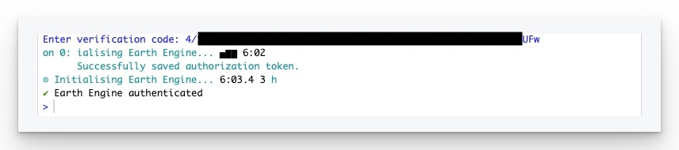

Troubleshooting
This section is for troubleshooting issues with the dataharvester package, including setup and installation.
Found a bug? Open an issue on the dataharvester GitHub repository by clicking the “New Issue” button in the “Issues” tab.
Google Earth Engine authentication
RStudio Cloud Authentication - warnings
Google has migrated to OAuth 2.0 for authentication protocols on October 3, 2022. Part of the upgrade protects users from phishing and app impersonation attacks.
Unfortunately, this has temporarily broken Google Earth Engine (GEE) authentication on RStudio Cloud (and Binder), as Google Cloud gets confused when we try to authenticate using a cloud service. A workaround is available and documented below.
To authenticate with Google Earth Engine (GEE), you will need to have an existing Google account. If you do not have one, you can create one reading the instructions here.
Once you have an account, authenticate with GEE by running the following code in the RStudio console:
library(dataharvester)
authenticate_harvester("r-reticulate",
earthengine = TRUE,
auth_mode = "rstudiocloud")Make sure that auth_mode is set to "rstudiocloud" as it is currently the only option available for RStudio Cloud and Binder (see warning callout above).
What happens next will look confusing, but is actually working. You will be prompted to open a new browser window, but because RStudio Cloud and Binder do not allow this, several warning messages will appear. Ignore them - copy the URL produced and paste it into a new browser window (Fig 1). Hint: triple-clicking (click-click-click) the address will highlight it completely for easy copy.

You will then need to sign in to an existing Google account. A couple of prompts will appear depending on whether you have already authenticated with GEE before. At some point, you will link your Google account to a GEE notebook (Fig 2).

Make sure to create a cloud project before generating the token and give your project a unique name (Fig 3). You will then need to generate a token. The option “Use read-only scopes” can be left unchecked since you are working with data (Fig 3), but we have not seen issues if the option is enabled.


Google will warn you once more about linking the notebook (that it created) to your Google Earth Engine data. Click “Continue” (Fig 5).

You will then be redirected to a page where you need to explicitly grant access to the GEE notebook (Fig 6). Check the two boxes and click “Continue”.

Finally, you will be redirected to a page that contains an Authorization Code (Fig 7). Copy the code and paste it into the RStudio console (Fig 8).


Alternative Conda environment installation
If you are a Python user, you may encounter trouble installing Python environments for dataharvester due to Python binary conflicts. One easy way to bypass this is to install Conda environment separately in the Terminal. As long as it is a conda environment, dataharvester will be able to find it by name. The text to include in your environment.yml is below - rename name: dataharvester to anything you like.
name: dataharvester
channels:
- conda-forge
dependencies:
- python=3.9
- rasterio
- gdal
- google-cloud-sdk
- rioxarray
- xarray
- h5netcdf
- pip
- pip:
- alive-progress
- eemont
- geemap
- geedim
- geopandas
- jupyter
- notebook
- numba
- owslib
- ipykernel
- ipywidgets==7.6.5
- earthengine-api
- wxee
- termcolorTo install the environment, run the following in the Terminal:
conda env create -f environment.ymlwhere environment.yml is the path to the file you created above. The installation should take anywhere from 5 to 10 minutes. Once it is done, you can use the environment in dataharvester by running the following code:
library(dataharvester)
authenticate_harvester("conda_env")where "conda_env" is the name of the environment you created above (e.g. "dataharvester").